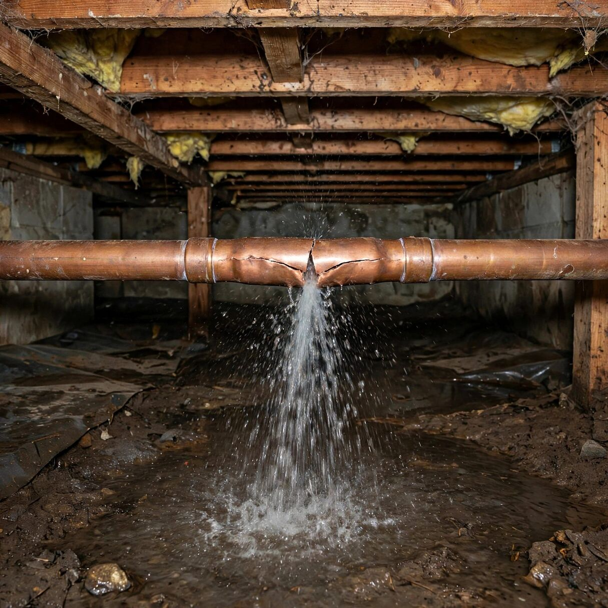
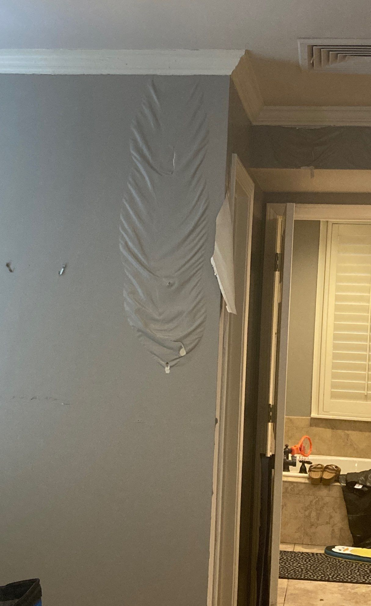
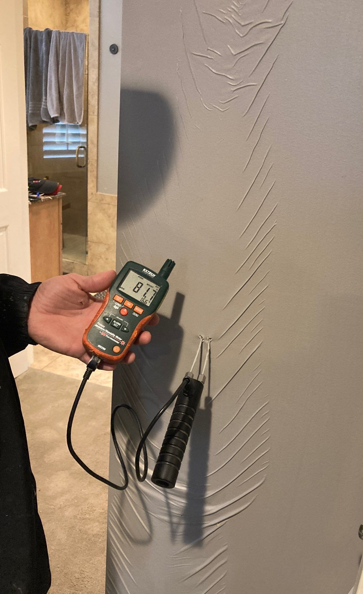
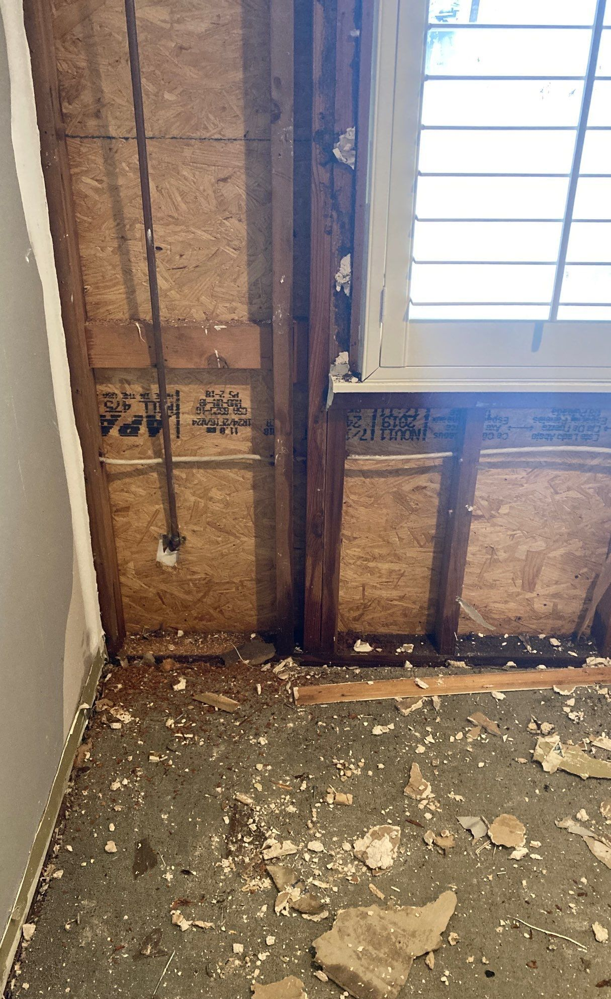
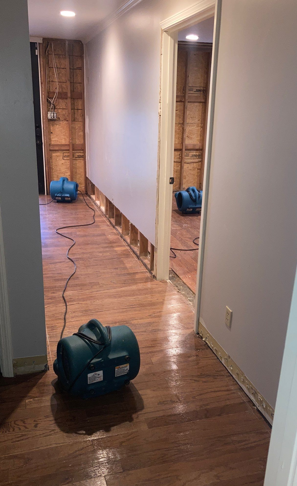

Property Owners Maintenance Plan
Stopping Leaks Before They Damage Your Home
Learn where leaks commonly begin, what warning signs to watch for, and how early action can help limit water damage.
Frozen pipe burst repairs and restoration in Jonesboro, AR and surrounding Northeast Arkansas communities covers the full job under one roof. Crain Bros Inc handles the emergency call, the pipe repair, and the water damage restoration that follows. Crews shut off the water, remove standing water, and protect the rooms still in use. Inspection and moisture readings show what can stay and what has to come out. Cleaning and drying prepare the structure for repair. Repairs restore the pipe, the structure, and the finished rooms. Crain Bros Inc is family-owned and has served homes and businesses in Northeast Arkansas since 1984.

Frozen pipe burst service begins with making the property safe. A burst releases a large amount of water in a short time. Emergency response shuts off the water at the main when the shutoff can be reached safely. Plumbing repairs replace the split section and test the line before normal use resumes. Standing water gets extracted from floors and low areas. Belongings in wet rooms get moved to dry space before removal work starts. Photographs record the split pipe, the wet rooms, and the visible damage.
Cold air reaches supply lines in exterior walls. Crawlspaces and attics hold lines that freeze during hard cold. Garages and kitchen cabinets hold lines that freeze too. American Red Cross frozen pipe guidance names those same cold spots. Burst water can run inside a wall before a stain shows. Burst water can also drop through a ceiling or spread under flooring.

Moisture readings show how far burst water traveled. Leak detection checks walls, floors, and ceilings around the split. Building inspection maps each room the water reached. Wall framing gets checked where readings show hidden moisture. Electrical outlets near wet walls get checked before rooms return to use. Readings set the scope for removal, cleaning, drying, and repairs.

Cleanup follows the needs of the property after inspection. Fast response limits how long burst water sits in hidden spaces. Personal property and contents care moves belongings from wet rooms to dry space before removal work starts. Materials that trap moisture come out when inspection shows they cannot dry in place. Remaining framing and subfloor get cleaned. Drying access opens the hidden spaces where mold can start. Those spaces sit behind cabinets and baseboards. Those spaces also sit inside walls and under flooring.

Drying protects the structure after cleaning. Air movers push air across wet framing and wet subfloor. Dehumidifiers pull moisture from the work area air. EPA moisture control guidance ties mold control to moisture control. Readings get checked during drying, not guessed at the end. Drying stops when readings verify the structure is dry.

Repairs restore the property in the right order. The split pipe gets replaced and tested first. Finish work waits until readings verify the wall cavity and subfloor are dry. New drywall closes walls after the cavity is dry. Flooring repairs restore the floor over a dry subfloor. Kitchen cabinets and the countertop go back after walls and floors are ready. Baseboards and trim finish the wall base. Painting completes the repaired rooms.
Documentation gives the property owner a clear record of the job. Photographs show the split pipe and the rooms before removal. Moisture readings show where water traveled and when drying finished. Approved work records show the authorized scope. Progress records show contents handling, cleaning, drying, and repairs. Completed work records show the finished rooms. We work on properties involved in insurance claims. The property owner gets the documentation.
Crain Bros Inc serves Jonesboro, Paragould, Blytheville, Trumann, Newport, Brookland, Bono, Bay, Lake City, Monette, Caraway, Harrisburg, Gosnell, and Walnut Ridge.
Property Owners Maintenance Plan
Learn where leaks commonly begin, what warning signs to watch for, and how early action can help limit water damage.
The Property Problem Report
Stop the water safely, document what happened, understand the affected areas, and stay in control of the work and cost.
The Property Problem Report
Use the stain location, timing, nearby rooms, weather, plumbing, and HVAC operation to guide the search before repairing the ceiling.
Guidance on why pipes freeze, which pipes freeze most often, how to protect pipes before cold weather, and how to thaw a frozen pipe safely.
Winter home preparation guidance that includes insulating pipes, sealing drafts, checking heating systems, and draining outdoor spigots.
Guidance on how water moves through buildings and moisture control for roofs, ceilings, plumbing, HVAC, walls, and other assemblies.
Homeowner guidance on correcting water problems, drying affected materials, and checking for hidden moisture.
Property-owner guidance on documentation, protective equipment, cleaning, disinfecting, ventilation, fans, and dehumidifiers.
Safety guidance for protective equipment and hazards associated with floodwater and sewage.
Related services carry a frozen pipe burst job from the split pipe through cleaning, drying, and repairs to the finished rooms.
Emergency response after a frozen pipe burst gets the water shut off before more rooms take on water. The first visit stops the flow and sets up the inspection that follows.
The inspection reads the split location, the wall cavities, the floors, and the ceilings the water reached. What it finds sets the removal scope, the cleaning plan, and the drying plan.
Leak detection after a frozen pipe burst reads moisture in walls, floors, and ceilings around the split. Those readings draw the map of where the water went before repairs start.
Plumbing services after a frozen pipe burst replace the split section and test the repaired line. Once the line holds water again, cleaning and drying carry the job forward.
Water damage restoration after a frozen pipe burst carries the whole job, from the split pipe through cleaning and drying to the finished rooms. One job covers the source, the cleaning, the drying, and the repairs.
Property and building restoration after a frozen pipe burst brings the structural repairs, the finish repairs, and the trade work together when water spreads through several rooms. The repair runs as one coordinated job, from the shutoff to the finished rooms.
Mold damage restoration after a frozen pipe burst starts with prevention through fast extraction, drying access, and verified drying. Inspection decides whether mold cleanup is needed after burst water is controlled.
Framing repair after a frozen pipe burst follows inspection of exposed wall studs, floor joists, and ceiling joists. Finish work waits until readings verify the structure is dry.
Insulation services after a frozen pipe burst replace wet insulation in wall cavities, ceilings, and floors. The cavity gets new insulation after drying, before drywall goes back on.
Drywall repair services after a frozen pipe burst cover opened walls, wet ceilings, and drying access openings. The drywall goes back up once the framing is dry and readings confirm it.
Flooring installation and repair after a frozen pipe burst fixes wood floors, tile floors, carpet, and subfloor the water reached. The new flooring goes in once the subfloor is repaired and dry.
Cabinetry repair and replacement after a frozen pipe burst deals with kitchen cabinets and bathroom vanities the water reached. Crain Bros Inc restores the cabinet that can be saved and rebuilds the damaged box that cannot.
Countertop services after a frozen pipe burst cover the countertop that comes off for cabinet work and the countertop the water reached. The detached countertop gets reset once the cabinet underneath is repaired.
Trim carpentry after a frozen pipe burst replaces baseboards and trim the water reached along walls and doorways. New trim finishes the rooms after walls and floors are repaired.
Painting services after a frozen pipe burst cover repaired walls and trim once the drywall underneath is ready. Fresh paint finishes the rooms after wall repairs are done.
Electrical services after a frozen pipe burst check outlets and wiring near wet walls for water exposure. The evaluation comes before the rooms go back into use.
Personal property and contents care after a frozen pipe burst moves belongings from wet rooms to dry space. Contents decisions get recorded while the structure dries and repairs run.
If it is safe, shut off the water at the main. Keep people away from wet outlets and wet ceilings. Document the visible conditions. Then call for help stopping the water, removing standing water, and inspecting the damage.
Frozen pipes burst where cold air reaches supply lines. Exterior walls hold many of those lines. Crawlspaces and attics hold supply lines that freeze. Garages and kitchen cabinets hold supply lines that freeze.
Remaining framing and subfloor get cleaned. Personal property in wet rooms gets moved to dry space. Materials that trap moisture come out when inspection shows they cannot dry in place. Fast extraction and drying access help keep mold from starting behind cabinets, baseboards, walls, and flooring. What gets cleaned depends on what the inspection finds: the material, the exposure, the physical condition, and the moisture readings.
Drying time depends on the materials that got wet. Airflow and moisture readings also affect the schedule. Readings verify when the structure is dry.
Yes. Crain Bros Inc repairs the split pipe and tests the line. Then we dry the structure and repair the framing, drywall, flooring, trim, and paint. The rooms go back into service after the repairs are complete.
Yes. Crain Bros Inc documents the visible conditions, the moisture readings, the approved work, the progress, and the completed repairs. The property owner gets all of it.